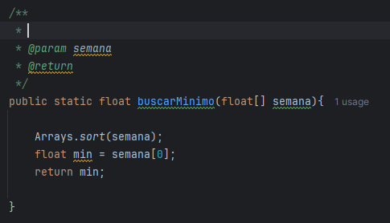
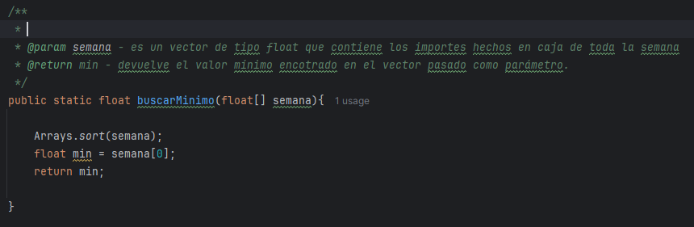
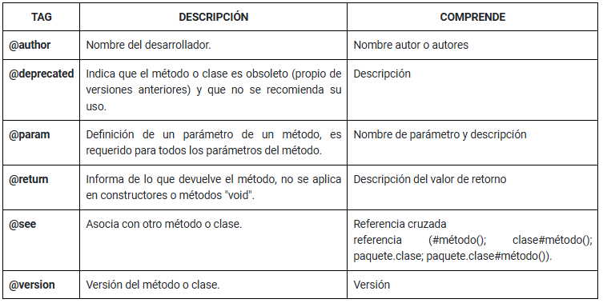
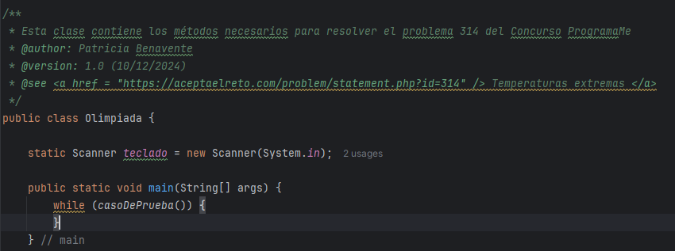
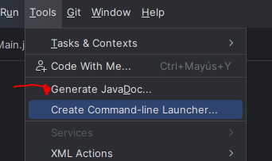
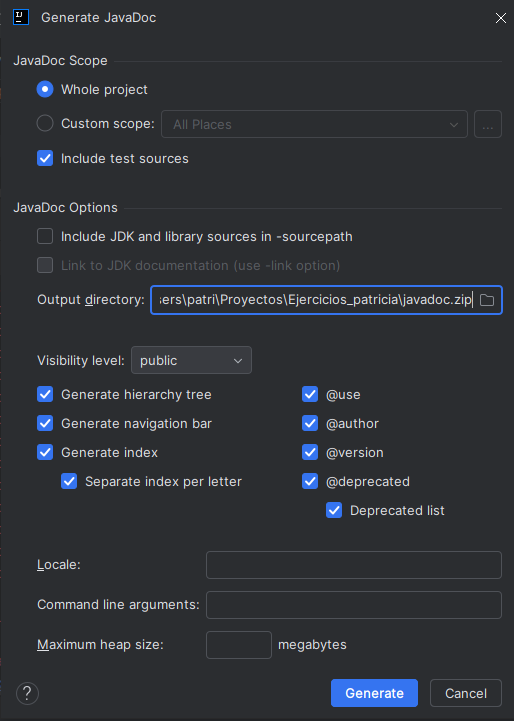
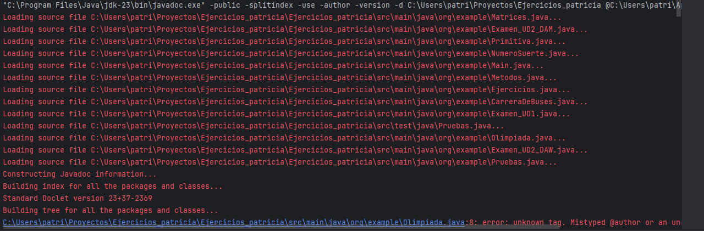
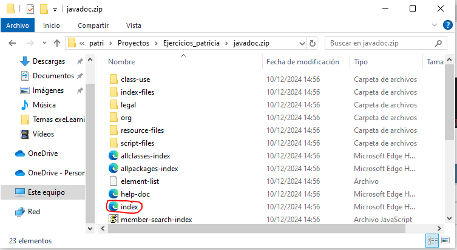
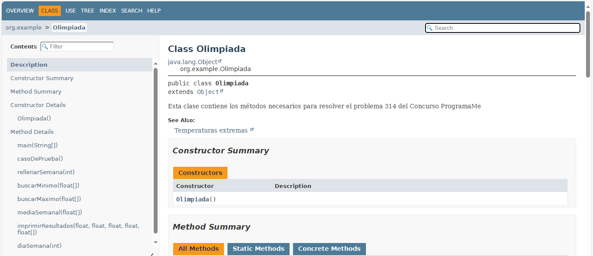
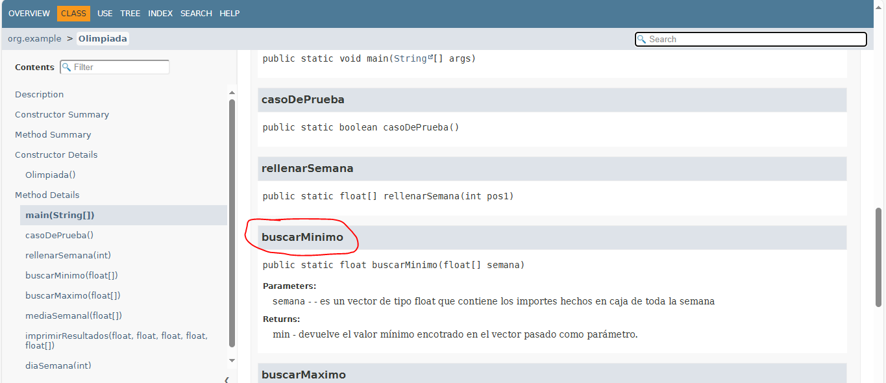

Documentar proyectos Java con Javadoc
Documentar un proyecto es algo fundamental de cara a su futuro mantenimiento. Cuando programamos una clase, debemos generar documentación lo suficientemente detallada sobre ella como para que otros programadores sean capaces de usarla.
Javadoc es una utilidad de Oracle para la generación de documentación en formato HTML a partir de código fuente Java. Javadoc es el estándar para documentar clases de Java. La mayoría de los IDEs utilizan Javadoc para generar de forma automática documentación de clases.
En IntelliJ IDEA, bastará con escribir "/**" justo antes de la cabecera de algún método y presionar enter:

Automáticamente se nos generará un fragmento de comentarios que contiene la etiqueta @param y @return. La idea es que cada programador escriba para cada etiqueta qué parámetros acepta el método correspondiente y qué devuelve. Por ejemplo:

Existen muchas más etiquetas que podríamos usar para documentar y dejar registrado qué hace nuestro código, pero nos ceñiremos a las siguientes:

Las etiquetas @author y @version se usan para documentar clases. Por lo tanto, no son recomendables en la cabecera de constructores ni métodos.

Dentro de los comentarios se admiten etiquetas HTML. Por ejemplo, con @see se puede referenciar una página web como link para recomendar su visita de cara a ampliar información.
Generación de HTML
Para generar el archivo que creará el formato de documentación formal, desde IntelliJ IDEA accederemos al menú Tools --> Generate JavaDoc...

Configuramos el documento a nuestro gusto y lo guardamos en la carpeta que queramos.
RECOMENDACIÓN: crear un archivo .zip

Se empezará a ejecutar...

Cuando finalice, buscamos los archivos generados y abrimos el principal en cualquier navegador: index.html


